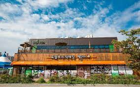
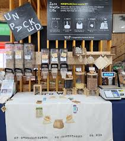

농부장터 소개
직매장 운영
식당 운영
네트워크 사업
교육 사업
조합원 정보
농부장터 역사
찾아오시는 길
생산자와 소비자가
직접만나는 곳
생산자와 소비자 간 마음의 거리는 줄이고
관계를 쌓아가는 이곳은 농부장터 입니다.
■ 로컬푸드 직매장 운영

☞ 지역에서 재배하는 농산물을 지역에서 소비할 수 있도록 돕습니다.
☞ 직거래사업으로 소비자와 생산자가 서로 소통하고 관계할 수 있는 얼굴 있는 먹거리를 추구합니다.
■ 특판 사업
출하농가 특판(목요장터)
직매장 앞 제철 농산물 시식 및 판매
공동구매사업
조합원 및 사회적경제 조직과 협력하여 농산물 공동 구매 사업 추진
각종 SNS(카카오톡, 네이버밴드) 활용 홍보
공공기관 특판 행사
공기업 대상 선물세트 공급
공공기관 방문 로컬푸드 농산물 직거래 행사
구내식당 식자재 공급
